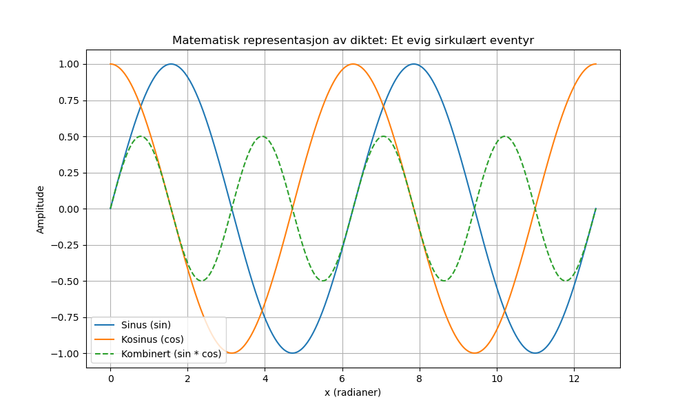

Dagens dikt
I et univers av tilfeldighet, uforutsigbarhetens øy,
Hvor små stjerner danser sakte i en evig bølge-øy.
Sinus svinger, kosinus ler, i rytmer som aldri dør,
Et mønster, kaos, tilbake igjen, et evig sirkulært eventyr.

Kode
import numpy as np
import matplotlib.pyplot as plt
# Generere data fra diktets matematiske representasjon
x = np.linspace(0, 4 * np.pi, 1000) # Fra 0 til 4π
sin_wave = np.sin(x) # "Sinus svinger"
cos_wave = np.cos(x) # "Kosinus ler"
combined_wave = sin_wave * cos_wave # "Et mønster, kaos, tilbake igjen"
# Plot
plt.figure(figsize=(10, 6))
plt.plot(x, sin_wave, label="Sinus (sin)")
plt.plot(x, cos_wave, label="Kosinus (cos)")
plt.plot(x, combined_wave, label="Kombinert (sin * cos)", linestyle="--")
plt.title("Matematisk representasjon av diktet: Et evig sirkulært eventyr")
plt.xlabel("x (radianer)")
plt.ylabel("Amplitude")
plt.legend()
plt.grid()
plt.savefig('2025-03-20-19-58-15.png')